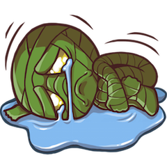
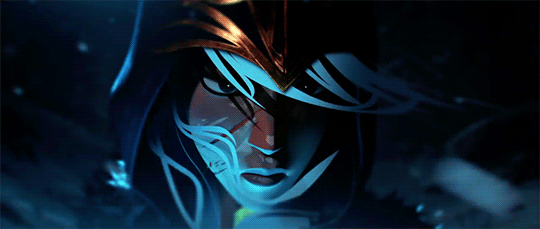
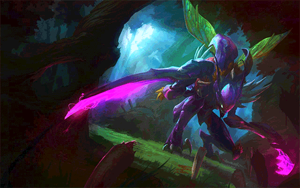
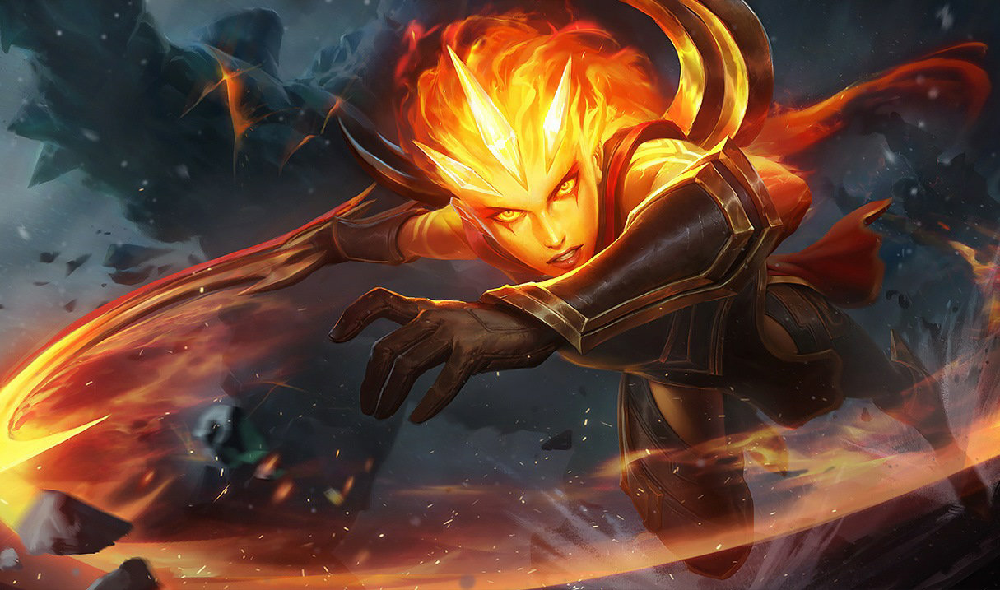
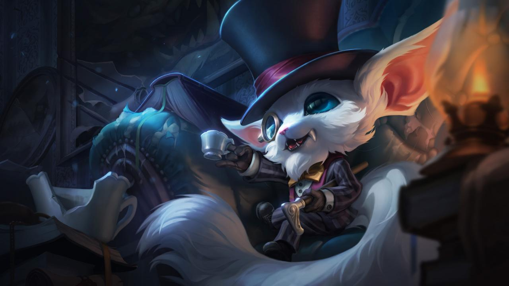

Mi vida y experiencia jugando League of Legends
Todo comenzo el 22 de enero de 2016, una pc all in one de Lenovo y una conexion de 10 mbps de internet. Claro, ¿que podria ir mal?, eso es lo que pensaba desde que mi primo me dijo que descargara dicho juego, ya que el tenia tiempo ya jugandolo y queria alguien conocido con quien jugar algunas partidas. Aun recuerdo como lleve mi computadora cerca del modem para poder conectar el cable Ethernet y que la velocidad de descarga fuera mas rapida. Conecte el cable y espere, estaba emocionado, porfin iba a jugar algo en linea sin tener que ir a un ciber y jugar en los xbox o rentar una pc... La descarga mas las actualizaciones duraron aproximadamente 7 horas.

Bueno, al final la espera valdria la pena. Estaba muy emocionado cuando vi el boton de "Jugar" (creo decia eso, o "Iniciar", no recuerdo jaja) de color naranja, lo presione y directamente me ingresio al Tutorial, recuerdo que elegi a Ashe, la arquera de hielo, me parecia linda y pues en ese tiempo tenia un gusto por los arcos. El tutorial era facil asi que lo termine en cuestion de minutos.

Me sentia listo para mi primera partida, no podia esperar mas y estaba emocionado. En ese momento mi primo no estaba en linea asi que comence solo. Al encontrar una partida, me percate que habia varios personajes, que en el juego se llaman "Campeones", entre ellos se encontraban 3 que recuerdo que son como los principales o mas "faciles" de usar, Ashe, Garen y Ryze, pero habian mas y yo queria jugar con uno que me gustara a mi. Entre los que estaban para seleccionar se encontraba un bicho raro llamado Kha'Zix, me gusto por su aspecto ya que no conocia sus habilidades, asi que lo elegi :D

En fin... Siento que es mucha historia contar toda mi vida en las partidas, asi que en resumidas cuentas he ganado, perdido, empatado, me he enojado y frustrado con el juego, he sido el jugador mas toxico y el que trata de calmar a los demas, he bailado de felicidad y gritado de emocion por las grandes partidas que he hecho (literal grandes ya que por lo general duran 1 hora cada partida), he dormido super tarde por este maldito juego...son tantas experiencias que he vivido aqui.
Tambien a lo largo del tiempo que he jugado, tuve grupos de amigos con los que compartia el gusto por este juegazo (realmente no lo es), que por azares del destino nos hemos separado por una u otra razon, pero asi como se van, llegan mas, y se repite la situacion.
Hoy en dia, a 13 de mayo del 2020, mis momentos de amor por el juego vienen y van, pero no es lo mismo jugar solo que con alguien, con quien puedes estarte quejando y riendo de las jugadas. Talves algun dia llegue ese duo o equipo con el que las partidas se hagan lo mas tryhard o lo mas divertidas, pero bueno, por ahora el juego esta ahi "empolvandose", solo lo abro para mantenerlo actualizado y ver si algun dia me dan ganas de dar clic en el boton Jugar e iniciar una nueva partida.
Pero bueno, antes de despedir esta entrada, les presentare a mis "mains" o personajes mas jugados y de los cuales me considero un experto (aunque no lo soy). Ellos son Diana, el Desdén de la Luna, y Gnar, El eslabon perdido. <3 <3 <3


Asi termino esta entrada, espero les haya parecido interesante. Hay muchas mas historias en toda mi vida jugando LoL, las cuales con gusto estare dispuesto a contar :3 Muchas gracias por leer.
Al dia de hoy soy Nivel 91, sin clasificatoria.
He perdido 18,061 minutos > 301 horas > 13 dias jugando este juego de mier...maravilla.
Esto equivale a aproximadamente leer 50 libros, ver 172 peliculas y caminar 1,204 km.
Proximamente